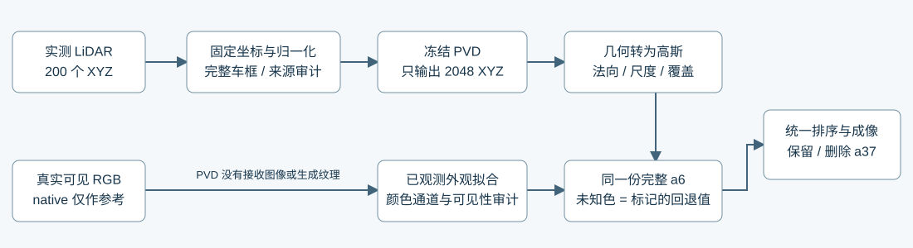
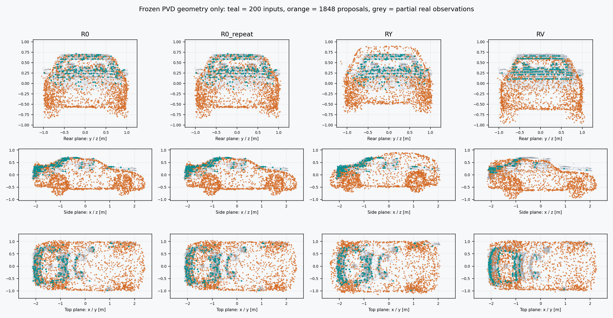

2026-11-05 · 车辆分支 · M2 固定 · 未训练模型下半车身为什么呈现整块灰白？
主因已经定位：当前没有隐藏车身纹理补全模型。PVD 只输出 XYZ。后续颜色拟合没有观测到的点，被赋予同一个蓝灰回退色。当前 M2 的 10,557/18,432 个基元在 RGB 设计矩阵中是严格零列，最终颜色全部等于回退值 [0.3392, 0.4157, 0.4892]。这解释了大块平色；它不是 PVD 生成的材质。
这轮核对了输入输出链，保留当前车辆资产。没有用提亮、前车颜色或未经确认的道路像素修饰未知车身，也没有启动后训练。

直接看颜色来自哪里
品红是临时诊断色。仅改动没有 RGB 拟合支持的点，27,429 个 BUILD 拟合像素的预测逐位不变。灰白下半部因此可以大幅改色，而现有数据项完全无法区分。前三类贡献来自同一次深度排序，守恒误差 ≤6.6e-07。
raw113
来源图：绿色 = 多帧且足够像素贡献的 RGB 拟合支持；黄色 = 弱支持；品红 = 完全无 RGB 拟合支持。它们说明损失来源，不等于逐点真实材质认证。最后一列白色只标出低于全部 199 帧关联测点最低高度的几何贡献；不是显露率或补全准确率。
实测最低高度为车体坐标 z=-0.21045m。其下共有 8,407 个提案基元，其中 8,178 个（97.28%）没有 RGB 拟合支持。已有底部真值没有被这项统计假定出来。
输入输出排查结果
| 环节 | 证据与结果 | 结论边界 |
|---|
| 原图 → 观测 RGB | 独立解码 3 帧 TFRecord JPEG，与 prepared PNG 的最大 uint8 差为 0；观测 RGB 同样一致。40 帧拟合 target 重建最大差为 0。 | 排除已检查路径上的 BGR、重复 /255 与导出色偏。 |
| 坐标、单位、相机和时间 | 完整仿射互逆误差约 1e−16；原 200 点与输出固定前缀一致；2048 点反变换与发布 XYZ 一致。BUILD40 相机矩阵误差为 0。 | 机械链通过。车头方向语义与整框统计适配仍是需要验证的约定。 |
| PVD 条件与输出 | 冻结官方 car_completion_3199，仅 XYZ；RGBA 图像与 confidence 字段未被当前 worker 消费。 | 图像没有进入 PVD 不是丢失 RGB 输出通道；模型本来就没有该接口。不能称它已具备纹理先验。 |
| 原始 200 点 | 从 54,715 条 OBB 关联返回中随机取点，横跨 123 帧；仅 7 点低于车体中心。与官方单视点合成深度的输入分布不同。 | 多帧关联并非精确表面真值；需区分输入资格与模型适配。 |
| 2048 点 → 高斯表面 | 法向、尺度、0.995 透明度及 0.003m 厚度均为下游适配约定；M2 再细化为 18,432 点。 | 高斯覆盖、连续性和材质缺失不能全部归因于扩散输出。 |
| 颜色优化与渲染 | SH0 解码与保存 RGB 一致；设计矩阵行和≈1，目标函数复算一致，收敛残差≈1e−6。 | 无数据列继续迭代不会获得纹理。少量弱支持饱和白点是另一种局部问题。 |
199 帧是否漏掉了能给底部上色的观测？
当前 49 帧之外，150 帧有 39,694 条关联测点。旧流程只留下 445 条稀疏颜色候选，均位于 z≈0.577–0.720m 的车顶；所有 199 帧关联点都没有进入 z<−0.21045m 的缺失带。相机也几乎一直从车后同侧观察。增加这些候选不能直接恢复下半车身颜色。
外 49 帧的包围盒相交检查过于保守，可能压掉真实上部观测；但附近其他时间窗现有 body masks 属于其他车辆，没有漏接一套现成的、已审核的 a6 掩码。下一步应审核新的对象身份与可见性，再重读原始图像收集颜色。候选缓存里的零 RGB 代表无标签，不能用作黑色材质真值。
几何输入的短对照
R0 使用原 200 点；R0_repeat 同输入、同初始噪声和 RNG 重复；RY 只改绕车体中心的正规 yaw180 约定；RV 用 raw106 的 255 个确认可见实测点中固定随机选 200 点。每组冻结同一权重，1000 步推理，无颜色拟合、无模型训练、无资产采用。
| 对照 | 实测部分 → 提案平均距离 /m | 实测部分距离 P90 /m | 与 R0 生成点集的对称距离 /m | 低于实测最低点的提案数 |
|---|
| R0 | 0.065714 | 0.116772 | — | 934 |
| R0_repeat | 0.065774 | 0.117055 | 0.005509 | 938 |
| RY | 0.068693 | 0.121887 | 0.136452 | 795 |
| RV | 0.080903 | 0.138644 | 0.091703 | 923 |
上述距离只检查已测部分的自洽性。真实点不覆盖下部，不能据此评价隐藏车身准确率，也不能按较好分数选择真实车头方向。RV 同时改变点源资格、时段、视点与采样覆盖，不能把差值全部解释为输入去噪。

同一状态和 RNG 恢复的单步输出仍有 2.8e-05–3.2e-05 的 normalized 差异；原始 PVCNN 含浮点 atomicAdd，未改其后端。完整 R0_repeat 与 R0 的生成点集对称距离为 0.00551m，RY、RV 分别为 0.13645m、0.09170m，说明输入约定会产生可见的几何敏感性，但不是正确性证明。精确采样重放未通过，所有试验只标为有限精度诊断；不能把小幅差值当成方法改进。两次重复也不足以估计统计分布。
已落实的接口修正与下一步
交付一份 附显式 I/O 合同的 M2：XYZ、法向、尺度、透明度、颜色与原 M2 全部保持，增加逐基元 RGB 损失支持状态、支持帧数与来源。raw105/113/130 的黑底、保留、删车渲染与原资产逐位相同。它修正了来源表达，不冒充画质提升。
- 先整理对象专属的可靠观测，继续检查几何输入的语义适配；不靠包围盒直接给隐藏面取色。
- 用本来可见的车身做方向无关的伪遮挡实验，分别验收几何恢复、颜色保持和未知外观延拓。
- 颜色需要显式外观补全能力。单纯继续训练只输出 XYZ 的 PVD，不会凭空出现尾灯、车牌或轮胎材质输出。先把外观接口与评价补齐，再决定后训练；预训练另立数据与算力合同。
训练前置门与未决问题 · 资产 I/O 合同 · 渲染不变验收 · 49 帧贡献审计 · 四组几何探针 · 预注册合同
独立审查：外观链 · 几何链 · 观测覆盖 · 探针实现 · 状态门修复复核。模型范围参见 PVD 官方实现与原论文。
当前 M2 继续作为研究参照；道路分支未启动。AutoDL 保持开机。所有旧现场、失败 smoke 和重放记录保留。